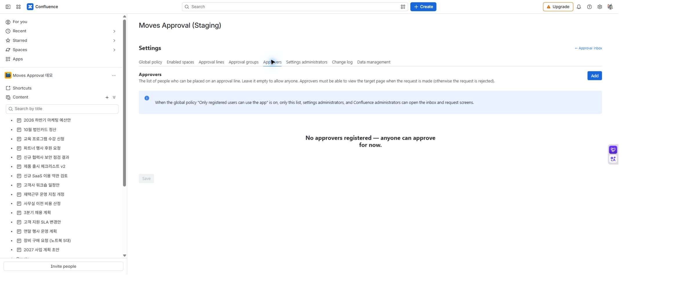
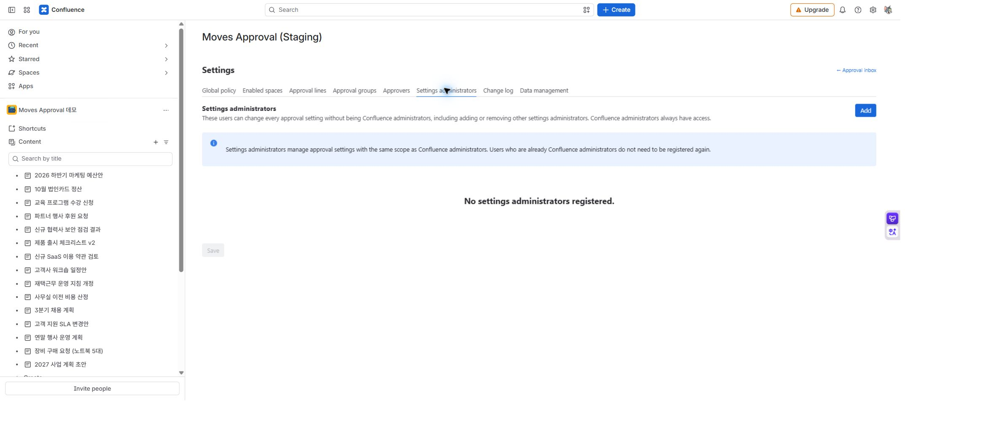

MOVES APPROVAL / 관리자 가이드
사용자·관리자와 접근 권한
앱에 들어올 수 있는 사람, 결재선에 넣을 수 있는 사람, 설정을 바꿀 사람을 구분해 관리합니다. 앱 등록은 Confluence 문서 권한을 대신하지 않습니다.
역할 구분
| 역할·명부 | 할 수 있는 일 | 별도로 필요한 것 |
|---|---|---|
| Confluence 관리자 | 모든 앱 설정, 다른 사람의 진행 중 요청 회수 | 실제 문서 작업에는 해당 작업의 권한 확인이 적용됩니다. |
| 설정 관리자 | 모든 앱 설정, 설정 관리자 추가·제거 | 다른 사람의 요청 회수 권한이 자동으로 생기지 않습니다. |
| 승인자 명부 | 명부 사용 시 결재선에 선택 가능한 사용자 | 해당 페이지 보기 권한이 필요합니다. |
| 요청자 | 요청 생성과 자신의 진행 중 요청 회수 | 요청 생성·재상신에는 페이지 편집 권한이 필요합니다. |
| 참조자·열람자 | 접근 가능한 요청의 상태·이력 확인 | 참조만으로 승인·반려할 수 없습니다. |
승인자 명부 등록
설정 → 승인자에서 사용자를 찾아 추가한 뒤 승인자 명부 저장을 누릅니다. 명부가 비어 있으면 승인자 선택을 명부로 제한하지 않습니다. 한 명이라도 등록해 운영하면 명부에 있는 사람만 결재선에 넣을 수 있습니다.
등록된 사용자만 앱 사용을 켤 예정이라면 승인자뿐 아니라 요청자도 등록하세요. 이 정책에서는 승인자 명부, 설정 관리자, Confluence 관리자만 업무함과 요청 화면에 접근합니다.

MA-19A · 이 예시의 명부는 비어 있습니다. 승인자를 등록하려면 추가를 누릅니다. 검색·선택 화면은 그다음에 열립니다.

MA-19B · 이 예시에는 등록된 설정 관리자가 없습니다. 추가로 지정할 수 있으며 Confluence 사이트 관리자는 이미 접근 권한이 있습니다.
설정 관리자 등록
설정 → 설정 관리자에서 이름을 두 글자 이상 입력해 사용자를 찾고 선택한 뒤 설정 관리자 저장을 누릅니다. Confluence 관리자는 별도 등록 없이 사용할 수 있습니다.
접근 제한 켜기 전 확인
- 요청자·승인자를 명부에 등록합니다.
- 운영 담당자를 설정 관리자로 등록합니다.
- 일반 계정으로 업무함과 대상 페이지 접근을 확인합니다.
- 전역 정책의 접근 제한을 켜고, 등록된 계정과 등록되지 않은 계정의 차이를 확인합니다.
설정 화면 접근, 문서 열람, 승인 차례는 서로 다른 조건입니다. 메뉴가 보인다는 이유로 모든 문서나 모든 요청을 처리할 수 있는 것은 아닙니다.